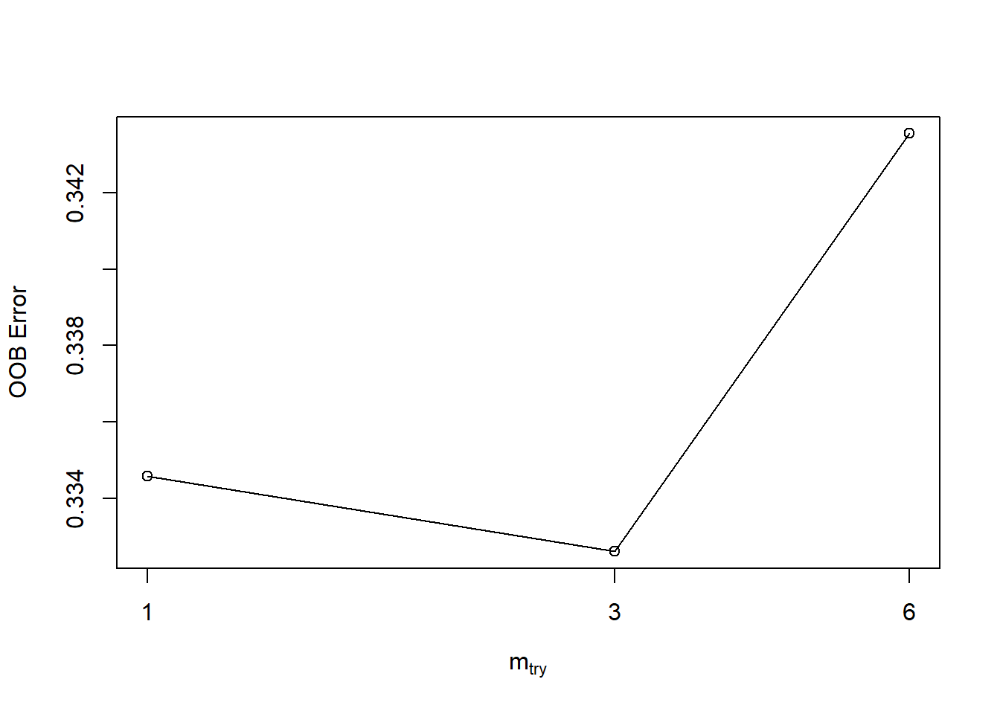
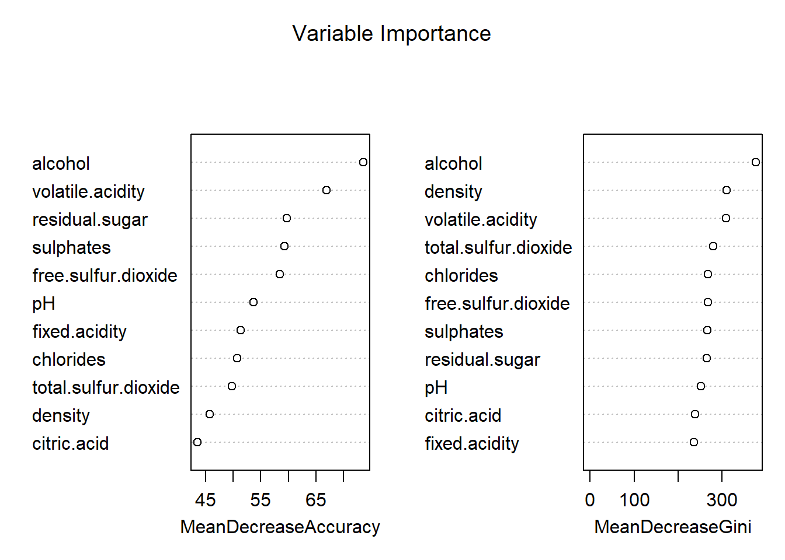

Chapter 4 Random Forest
Decision trees can suffer from from the problem of overfitting. In order to help solve this problem, the Random Forest algorithm was devised. It works by building multiple decision trees and then merging them together to form a prediction. Random forest can be used to solve both classification and regression problems, however, for our analysis we will be utilizing it solve our classification problem.
Each tree within the Random Forest is grown as follows:
- If the number of cases in the training set is N, sample N cases at random - but with replacement, from the original data. This sample will be the training set for growing the tree.
- If there are M input variables, a number m<<M is specified such that at each node, m variables are selected at random out of the M and the best split on these m is used to split the node. The value of m is held constant during the forest growing.
- Each tree is grown to the largest extent possible. There is no pruning." (Breiman and Cutler)
4.1 Create Random Forest Model
We will start by running the randomForest function utilizing the training dataset to train the model.
set.seed(444)
rf.train <- train
rf.train$quality <-as.factor(rf.train$quality)
rf.test <- test
rf.test$quality <-as.factor(rf.test$quality)
# quality is a function of all other variables
rf <- randomForest(quality~., data=rf.train)
print(rf)##
## Call:
## randomForest(formula = quality ~ ., data = rf.train)
## Type of random forest: classification
## Number of trees: 500
## No. of variables tried at each split: 3
##
## OOB estimate of error rate: 32.91%
## Confusion matrix:
## 3 4 5 6 7 8 9 class.error
## 3 0 0 11 8 0 0 0 1.0000000
## 4 0 24 82 43 2 0 0 0.8410596
## 5 0 4 1086 421 7 0 0 0.2845850
## 6 0 1 335 1526 112 1 0 0.2273418
## 7 0 0 21 354 379 6 0 0.5013158
## 8 0 0 3 52 34 47 0 0.6544118
## 9 0 0 0 1 4 0 0 1.0000000The default number of trees was utilized to run our model (500) and the number of variables tried at each split in the tree was \(3\) variables.
The table above shows the confusion matrix for the random forest model created with the training dataset. The out-of-bag (OOB) error is shown to be \(32.91\%\). According to the class.error results, the model was most inaccurate when predicting wines with a quality of \(3\) or \(9\) with a \(100\%\) error rate. It was most accurate when predicting wines of value 6 with only a \(22\%\) error rate.
4.2 Predicition and Confusion Matrix - Training Data
The following code runs a prediction of the quality values for the training set using the random forest model created above.
As you can see, all 6 predictions in the predicted values vector are 100% accurate. This makes sense as the random forest model was built using the training data, so it has already “seen” these values.
p1 <- predict(rf, rf.train)
p1<- droplevels(p1) #drop any unused levels
head(p1) # predicted values## 1 3 6 7 9 10
## 5 5 5 5 7 5
## Levels: 3 4 5 6 7 8 9head(rf.train$quality) # actual values## [1] 5 5 5 5 7 5
## Levels: 3 4 5 6 7 8 9#install.packages('caret', dependencies = TRUE)
confusionMatrix(p1, rf.train$quality )## Confusion Matrix and Statistics
##
## Reference
## Prediction 3 4 5 6 7 8 9
## 3 19 0 0 0 0 0 0
## 4 0 151 0 0 0 0 0
## 5 0 0 1518 0 0 0 0
## 6 0 0 0 1975 0 0 0
## 7 0 0 0 0 760 0 0
## 8 0 0 0 0 0 136 0
## 9 0 0 0 0 0 0 5
##
## Overall Statistics
##
## Accuracy : 1
## 95% CI : (0.9992, 1)
## No Information Rate : 0.4327
## P-Value [Acc > NIR] : < 2.2e-16
##
## Kappa : 1
##
## Mcnemar's Test P-Value : NA
##
## Statistics by Class:
##
## Class: 3 Class: 4 Class: 5 Class: 6 Class: 7 Class: 8
## Sensitivity 1.000000 1.00000 1.0000 1.0000 1.0000 1.0000
## Specificity 1.000000 1.00000 1.0000 1.0000 1.0000 1.0000
## Pos Pred Value 1.000000 1.00000 1.0000 1.0000 1.0000 1.0000
## Neg Pred Value 1.000000 1.00000 1.0000 1.0000 1.0000 1.0000
## Prevalence 0.004163 0.03309 0.3326 0.4327 0.1665 0.0298
## Detection Rate 0.004163 0.03309 0.3326 0.4327 0.1665 0.0298
## Detection Prevalence 0.004163 0.03309 0.3326 0.4327 0.1665 0.0298
## Balanced Accuracy 1.000000 1.00000 1.0000 1.0000 1.0000 1.0000
## Class: 9
## Sensitivity 1.000000
## Specificity 1.000000
## Pos Pred Value 1.000000
## Neg Pred Value 1.000000
## Prevalence 0.001096
## Detection Rate 0.001096
## Detection Prevalence 0.001096
## Balanced Accuracy 1.000000Using the confusion matrix function from the caret library, we can show the accuracy of our model when predicting the quality values for our training dataset. The accuracy is 100% when utilizing the training dataset with the random forest model trained by the training dataset.
4.3 Predicition and Confusion Matrix - Test Data
The following code runs a prediction of the quality values for the test dataset using the random forest model created with our training dataset from above.
This model was able to predict 4 out of 6 of the first values accurately.
p2 <- predict(rf, rf.test)
p2<-droplevels(p2) # drop unused levels
head(p2) # predicted values## 2 4 5 8 11 16
## 5 5 5 5 5 5
## Levels: 3 4 5 6 7 8head(rf.test$quality) # actual values## [1] 5 6 5 7 5 5
## Levels: 3 4 5 6 7 8confusionMatrix(p2, rf.test$quality )## Confusion Matrix and Statistics
##
## Reference
## Prediction 3 4 5 6 7 8
## 3 0 1 0 0 0 0
## 4 0 8 1 1 0 0
## 5 3 31 448 136 9 0
## 6 7 24 169 680 128 24
## 7 1 1 2 44 178 15
## 8 0 0 0 0 4 18
##
## Overall Statistics
##
## Accuracy : 0.6891
## 95% CI : (0.6679, 0.7097)
## No Information Rate : 0.4454
## P-Value [Acc > NIR] : < 2.2e-16
##
## Kappa : 0.512
##
## Mcnemar's Test P-Value : NA
##
## Statistics by Class:
##
## Class: 3 Class: 4 Class: 5 Class: 6 Class: 7 Class: 8
## Sensitivity 0.0000000 0.123077 0.7226 0.7898 0.55799 0.315789
## Specificity 0.9994797 0.998929 0.8637 0.6716 0.96097 0.997868
## Pos Pred Value 0.0000000 0.800000 0.7145 0.6589 0.73859 0.818182
## Neg Pred Value 0.9943064 0.970359 0.8683 0.7991 0.91667 0.979592
## Prevalence 0.0056906 0.033626 0.3207 0.4454 0.16503 0.029488
## Detection Rate 0.0000000 0.004139 0.2318 0.3518 0.09208 0.009312
## Detection Prevalence 0.0005173 0.005173 0.3244 0.5339 0.12468 0.011381
## Balanced Accuracy 0.4997399 0.561003 0.7931 0.7307 0.75948 0.656829Using the confusion matrix function from the caret library, we can show the accuracy of our model in predicting the quality values for our test dataset. The accuracy is roughly 69% when utilizing the test dataset with the random forest model trained by the training dataset.
4.4 Tuning our Model
Now, that we have run our initial model, we can focus on fine tuning the random forest parameters in order to create a more accurate predictive model.
4.4.1 Plotting the Error Rate
Plotting the error rate to the number of trees can show us where our model has more or less the same level of effectiveness and we can choose a more accurate tree number.
plot(rf)The model appears to have a drop off after about 300 trees and then is more or less constant, therefore, we can adjust our tree number in the model to be 300.
4.4.2 Tuning mTry
The mTry value reflects the number of variables tested at each node split. The tuneRF function can be used to determine what our mTry value should be.
set.seed(2222)
t <- tuneRF(rf.train[,-12], rf.train[,12],
stepFactor = 0.5,
plot=TRUE,
ntreeTry = 100,
trace=TRUE,
improve=0.05)## mtry = 3 OOB error = 33.26%
## Searching left ...
## mtry = 6 OOB error = 34.36%
## -0.03293808 0.05
## Searching right ...
## mtry = 1 OOB error = 33.46%
## -0.005928854 0.05 This output indicates that our model hits its lowest error rate when the mTry value is 3, so we can adjust our model to reflect this new value.
4.5 Recreate our Random Forest Model
The following code reruns our model utilizing the new tuning parameters found above.
set.seed(444)
# quality is a function of all other variables
rf <- randomForest(quality~., data=rf.train,
ntree=300,
mTry=3,
importance=TRUE,
proximity=TRUE)
print(rf)##
## Call:
## randomForest(formula = quality ~ ., data = rf.train, ntree = 300, mTry = 3, importance = TRUE, proximity = TRUE)
## Type of random forest: classification
## Number of trees: 300
## No. of variables tried at each split: 3
##
## OOB estimate of error rate: 32.23%
## Confusion matrix:
## 3 4 5 6 7 8 9 class.error
## 3 0 1 10 8 0 0 0 1.0000000
## 4 0 21 85 45 0 0 0 0.8609272
## 5 0 5 1100 407 6 0 0 0.2753623
## 6 0 1 321 1537 115 1 0 0.2217722
## 7 0 0 22 343 388 7 0 0.4894737
## 8 0 0 4 55 30 47 0 0.6544118
## 9 0 0 0 1 4 0 0 1.0000000Our original OOB error rate was 32.91% and utilizing our new tuned parameters, our OOB error rate was 32.23%, so it was improved roughly 0.7%.
4.6 Rerun Predicition and Confusion Matrix - Training Data
p1 <- predict(rf, rf.train)
p1<- droplevels(p1) # drop any unused levels
head(p1) # predicted values## 1 3 6 7 9 10
## 5 5 5 5 7 5
## Levels: 3 4 5 6 7 8 9head(rf.train$quality) # actual values## [1] 5 5 5 5 7 5
## Levels: 3 4 5 6 7 8 9confusionMatrix(p1, rf.train$quality )## Confusion Matrix and Statistics
##
## Reference
## Prediction 3 4 5 6 7 8 9
## 3 19 0 0 0 0 0 0
## 4 0 151 0 0 0 0 0
## 5 0 0 1518 0 0 0 0
## 6 0 0 0 1975 0 0 0
## 7 0 0 0 0 760 0 0
## 8 0 0 0 0 0 136 0
## 9 0 0 0 0 0 0 5
##
## Overall Statistics
##
## Accuracy : 1
## 95% CI : (0.9992, 1)
## No Information Rate : 0.4327
## P-Value [Acc > NIR] : < 2.2e-16
##
## Kappa : 1
##
## Mcnemar's Test P-Value : NA
##
## Statistics by Class:
##
## Class: 3 Class: 4 Class: 5 Class: 6 Class: 7 Class: 8
## Sensitivity 1.000000 1.00000 1.0000 1.0000 1.0000 1.0000
## Specificity 1.000000 1.00000 1.0000 1.0000 1.0000 1.0000
## Pos Pred Value 1.000000 1.00000 1.0000 1.0000 1.0000 1.0000
## Neg Pred Value 1.000000 1.00000 1.0000 1.0000 1.0000 1.0000
## Prevalence 0.004163 0.03309 0.3326 0.4327 0.1665 0.0298
## Detection Rate 0.004163 0.03309 0.3326 0.4327 0.1665 0.0298
## Detection Prevalence 0.004163 0.03309 0.3326 0.4327 0.1665 0.0298
## Balanced Accuracy 1.000000 1.00000 1.0000 1.0000 1.0000 1.0000
## Class: 9
## Sensitivity 1.000000
## Specificity 1.000000
## Pos Pred Value 1.000000
## Neg Pred Value 1.000000
## Prevalence 0.001096
## Detection Rate 0.001096
## Detection Prevalence 0.001096
## Balanced Accuracy 1.000000Again, all of our predictions were 100% accurate as the training data had already been “seen” by the model.
4.7 Rerun Predicition and Confusion Matrix - Test Data
p2 <- predict(rf, rf.test)
p2 <- droplevels(p2) # drop any unuused levels
head(p2) # predicted values## 2 4 5 8 11 16
## 5 5 5 5 5 5
## Levels: 3 4 5 6 7 8head(rf.test$quality) # actual values## [1] 5 6 5 7 5 5
## Levels: 3 4 5 6 7 8confusionMatrix(p2, rf.test$quality )## Confusion Matrix and Statistics
##
## Reference
## Prediction 3 4 5 6 7 8
## 3 0 1 0 0 0 0
## 4 0 8 1 2 0 0
## 5 3 32 447 139 10 0
## 6 7 23 170 675 130 25
## 7 1 1 2 45 175 14
## 8 0 0 0 0 4 18
##
## Overall Statistics
##
## Accuracy : 0.6844
## 95% CI : (0.6632, 0.7051)
## No Information Rate : 0.4454
## P-Value [Acc > NIR] : < 2.2e-16
##
## Kappa : 0.5047
##
## Mcnemar's Test P-Value : NA
##
## Statistics by Class:
##
## Class: 3 Class: 4 Class: 5 Class: 6 Class: 7 Class: 8
## Sensitivity 0.0000000 0.123077 0.7210 0.7840 0.54859 0.315789
## Specificity 0.9994797 0.998394 0.8599 0.6688 0.96097 0.997868
## Pos Pred Value 0.0000000 0.727273 0.7084 0.6553 0.73529 0.818182
## Neg Pred Value 0.9943064 0.970343 0.8671 0.7940 0.91504 0.979592
## Prevalence 0.0056906 0.033626 0.3207 0.4454 0.16503 0.029488
## Detection Rate 0.0000000 0.004139 0.2312 0.3492 0.09053 0.009312
## Detection Prevalence 0.0005173 0.005691 0.3264 0.5329 0.12312 0.011381
## Balanced Accuracy 0.4997399 0.560735 0.7904 0.7264 0.75478 0.656829The accuracy is roughly \(68.24\%\) when utilizing the test dataset with the new random forest model. This is a \(0.7\%\) improvement from the previous results of \(68.91\%\).
4.8 Variable Importance
We are able to see the variables that had the highest level of importance in our model by running the varImpPlot function.
varImpPlot(rf,
main="Variable Importance") This tells us that alcohol has the greatest importance in our model. Removing this variable would result in a 75% mean decrease in accuracy.
4.9 Accuracy
In the code below we are adding the percentage accuracy to the accuracy dataframe for later model comparison.
accuracy[2,1] <- confusionMatrix(p2, rf.test$quality )[["overall"]][["Accuracy"]]